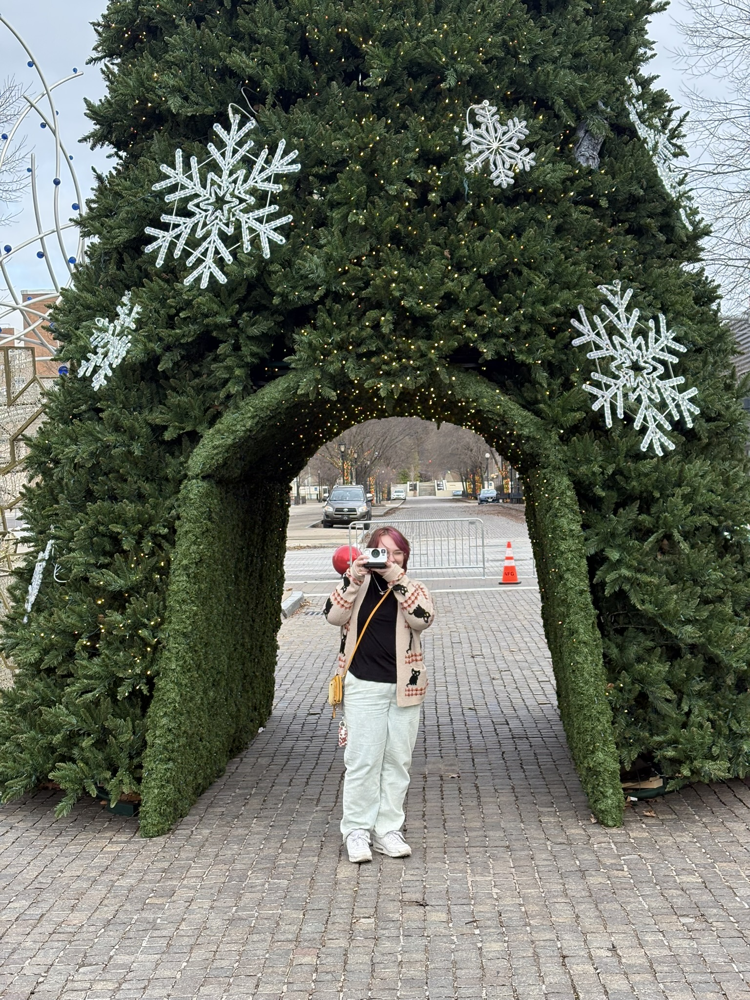
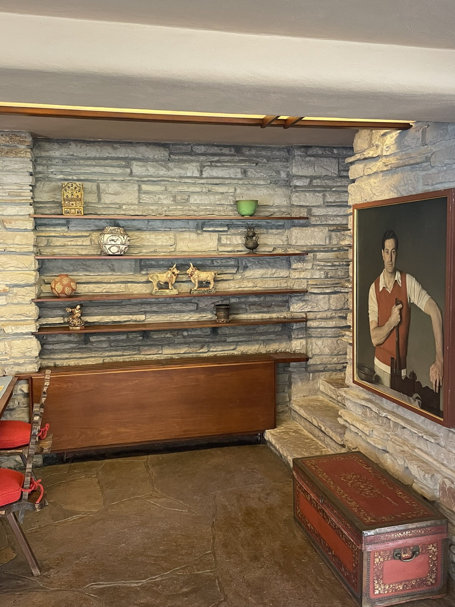

Ash under a Christmas Tree set up near Niagara FallsNiagara Falls in winterBridges in BuffaloGrove City Memorial Park pond in early SpringBaby Luna

Interior living room of FallingwaterFallingwater as seen from the viewing platformPresque Isle beach in winter Ash on frozen Lake ErieWalk to the graveyard on HalloweenDash looking awesome at Frontier ParkLuna in a heightened state of alertnessNat looking awesome in WalmartPath from OBS to Ohio Hall in SpringTree outside of Turnbull Hall in WinterPhipps Conservatory in FallOutside Wilson Picnic Grove on a foggy Winter morningPath from OBS to Ohio Hall in Fall